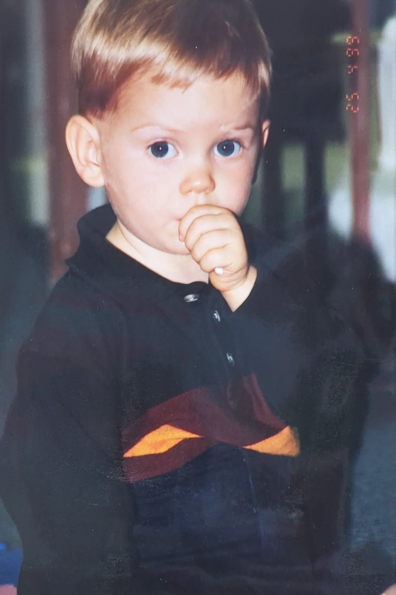

With 20+ years as a classically trained concert pianist and 16+ years as a multi-instrumentalist, I’ve spent most of my life finding new ways to make noise — writing, arranging, recording, producing, performing, and teaching along the way.
I’m an award-winning composer/arranger with a Music Business degree focused on composition. I’ve worked across everything from solo recordings to full ensembles, live sound and lighting, and production studios.
I’ve managed studios and teams, taught in both public and private education, and spent years volunteering in disaster and medical relief work.
The music stuff is only part of the story. I’m a competitive martial artist and kickboxer, licensed SCUBA diver, certified lifeguard and heavy-machinery operator, amateur electronics tinkerer, and reasonably dangerous person to give a toolbox to. I’ve built, broken, fixed, flown, crashed, created, and have no plan on ever slowing down.
If you can’t do it now, figure it out and make it happen!